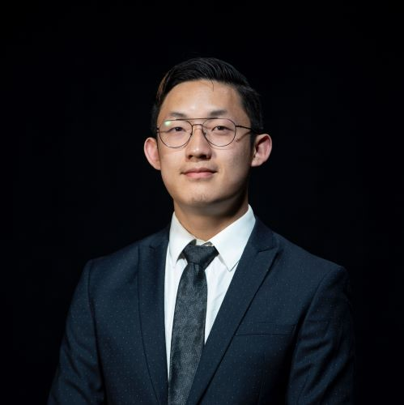

Welcome to my personal website. Here you will find information about my research, publications, projects, and more.
I am a computational biologist with expertise in AI/Machine Learning and Cancer Genomics. I am passionate about developing novel models for cancer research and have experience in various bioinformatics techniques and programming languages.
ETH Zurich - Ph.D. in AI for Biology (Sep 2025 – Sep 2029)
Harvard Medical School - S.M. in Biomedical Informatics, GPA: 4.0/4.0 (Aug 2022 – May 2024)
Concentrations: AI/Machine-Learning and Cancer Genomics
University of California – San Diego - B.S. in Bioengineering: Bioinformatics, GPA: 3.84/4.0 (Sep 2018 – June 2022)
Concentrations: Computer Science and Cancer Genomics
Currently working on 3 projects. Selected highlights:
Investigating biological signal-to-noise ratios and what they reveal about virtual cell modeling.
Developing models to infer tumor phylogenies from single-cell datasets.
Studying how societies of agents can be coordinated for better collective outcomes, inspired by human society.
Role: Computational Biologist (July 2024 – Current)
Developing novel AI/ML transformer decoder-only large foundation language models for inferring and generating cancer evolution at the single-cell level using scRNAseq data under Dr. Simona Cristea, PhD. The work includes data aggregation using publicly available scRNAseq datasets, pseudo cell evolution progression generations from k-nearest neighbors, and constructing custom transformer models for cancer cell evolution prediction.
Role: Computational Biologist (July 2024 – Current)
Collaborating with Dr. Brian Wolpin, MD, MPH, Dr. Jonathan Nowak, MD, PhD, and Dr. Andrew Aguirre, MD, PhD, on a project analyzing biomarkers and tumor micro-environments of pancreatic cancer using spatially resolved single-cell RNA sequencing data. This study involves constructing standardized pipelines for cell type annotations and tumor subtyping, and validating results with spatial information.
Role: Graduate Student Researcher (Nov 2022 – May 2024)
Focused on developing deep neural networks for inferring melanoma tumor ploidy, purity, cancer cell fractions, and heterogeneity from tumor-only targeted panel sequencing data under Dr. David Liu, MD, MPH, MS. Responsibilities included data cleaning, variant allele frequency (VAF) analysis, read depth analysis, and developing statistical models for cancer cell fraction and heterogeneity inferences.
Role: Undergraduate Bioinformatics Researcher (May 2021 – Aug 2022)
Conducted a comprehensive benchmarking of mutational signature assignment tools under Dr. Ludmil B. Alexandrov, PhD. This involved the installation and execution of over 20 different mutational signature assignment tools, data analysis, benchmarking using synthetic datasets, and upgrading SigProfilerSingleSample, the assignment tool developed by the Alexandrov lab.
Role: Staff Research Associate (May 2022 – Aug 2022)
Worked on intervertebral disc restoration using a rabbit model under Dr. Koichi Masuda, MD. Responsibilities included performing pre-operational, surgical, and post-operational procedures, and conducting 2D x-rays and 3D micro-CT post-harvesting analysis.
Role: Undergraduate Researcher (Apr 2019 – Aug 2022)
Worked on a senior design project for surgical restoration of the anterior cruciate ligament and knee biomechanics, including improving surgical techniques for ACL reconstruction using rabbit models and quantifying marine animal teeth enamel structure using micro-CT.
AI/ML, Programming Languages (R, Python, Java, C, C++), Git, Node.js, React, MySQL, MongoDB, Flask, AWS, Docker, Google Cloud Service, Linux, HTML/CSS, Bioinformatics Techniques.
Email: xiwang2@ethz.ch